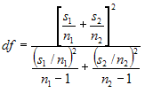

If the assumption of 'equal variances' is violated, then we have to compute the test statistic using the individual sample's standard deviation instead of pooled standard deviation. Like the TTestEqualVariances formula, the TTestUnequalVariances formula also will be carried out on two independent samples. The only difference with unequal variances test is that the sample should be of different sizes.
Steps to perform the test
1. Specify the null hypothesis and alternate hypothesis.
· Null Hypothesis - Difference between the two means is zero.
· Alternate Hypothesis - Difference between the two means is not zero.
2. Calculate the means of the two input series (µ1 and µ2)and calculate their difference (Md).
Md = µ1 - µ2
3. Calculate the variances of the two input series (s1 and s2).
4. Let n1 and n2 be the number of data points in first and second series respectively.
5. Calculate the degrees of freedom.

6. Calculate the T-statistic as given below.
t = (µ1 - µ2 - Md) / Sqrt( s1/n1 + s2/n2 )
7. Choose a level of significance(probability), say p = 0.05 and read the tabulated value.
8. If the calculated tvalue exceeds the tabulated value we can say that the means are significantly different at that level of probability.
Using the Formula
The TTest formula for unequal variances can be calculated by using the TTestUnEqualVariances method of the BasicStatisticalFormulas class. The following table presents the details of this method. This method returns an instance of TTestResult class that stores the resultant values of this test such as means of the two series, T value, degrees of freedom, number of points in every series, T critical value and confidence level(probability).
|
Method Name |
Parameters |
Return Value |
|
TTestUnEqualVariances |
1. HypothesizedMeanDifference: A double value that gives the difference between the means of the two input series. 2. Probability: A double value that denotes the probability that gives the confidence level. 3. FirstSeries: A ChartSeries object that stores the first group of data. 4. SecondSeries: A ChartSeries object that stores the second group of data. |
A TTestResult object that has the following members:
· FirstSeriesMean · SecondSeriesMean · FirstSeriesVariance · SecondSeriesVariance · Tvalue · DegreeOfFreedom · ProbabilityTOneTail · TCriticalValueOneTail · ProbabilityTTwoTail TCriticalValueTwoTail |
Example
Here is a code snippet that shows a sample usage.
|
[C#]
TTestResult ttr = BasicStatisticalFormulas.TTestUnEqualVariances(0.2, 0.05,series1,series2); |
|
[VB.NET]
Dim ttr As TTestResult = BasicStatisticalFormulas.TTestUnEqualVariances(0.2, 0.05, series1, series2) |